About Me
Mechanical engineering professional with experience in hydropower construction, mechanical and electromechanical equipment, site coordination, quality assurance and industrial maintenance. My interests include renewable energy, mechanical system reliability and engineering research.
Technical Skills
Design: AutoCAD, SolidWorks, Autodesk Inventor
Analysis: ANSYS, finite element analysis (FEA), computational fluid dynamics (CFD)
Project and maintenance: Microsoft Project, CMMS, preventive and corrective maintenance
Quality: Dye penetrant, magnetic particle, and ultrasonic testing
Systems: PLC-controlled hydraulic and electromechanical equipment
Documentation: Tenders, bills of quantities, payment certificates, Microsoft PowerPoint
Education
Master of Science, Engineering Project Management
Federation University, Sydney, Australia
Bachelor of Science, Mechanical Engineering
Bharath University, Chennai, India
Ranked first in the final year in a cohort of 200 or more students.
+2 Intermediate, Science
Manimukunda College, Nepal
Professional Experience
Mechanical Technician
Sunshine Linen · Sydney, Australia
Inspect, maintain, and repair tunnel-compartment equipment, storage conveyors, and shuttle conveyors. Troubleshoot PLC-controlled machinery and monitor fluid levels, temperatures, and pressures.
Work includes preventive maintenance, safety inspections, and servicing compressors, boilers, ironers, and electromechanical systems.
Mechanical Engineer (FIFO), Site Engineer and Project Coordinator
Mega Hydro and Engineering · Butwal, Nepal
Worked on the Dordi-1 Hydroelectric Project in Lamjung and the Richet hydropower project in Gorkha, covering documentation, design, fabrication, installation, testing, commissioning, and maintenance.
Responsibilities included site coordination, scheduling and budgeting in MS Project, tender documents, bills of quantities, Interim Payment Certificates, and preventive and corrective maintenance planning.
Managed fabrication and erection quality control using dye penetrant, magnetic particle, and ultrasonic testing, alongside coordination with clients and contractors.
Hydropower Projects
Richet Khola Hydropower Project
Field photographs documenting penstock pipeline positioning, hillside alignment and reinforced-concrete hydraulic infrastructure.

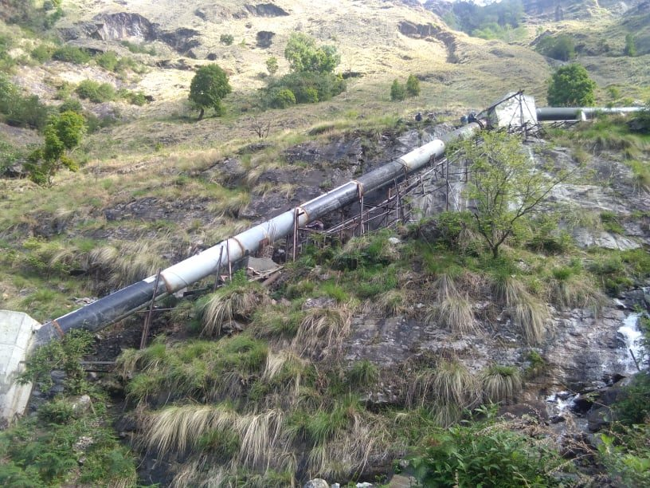
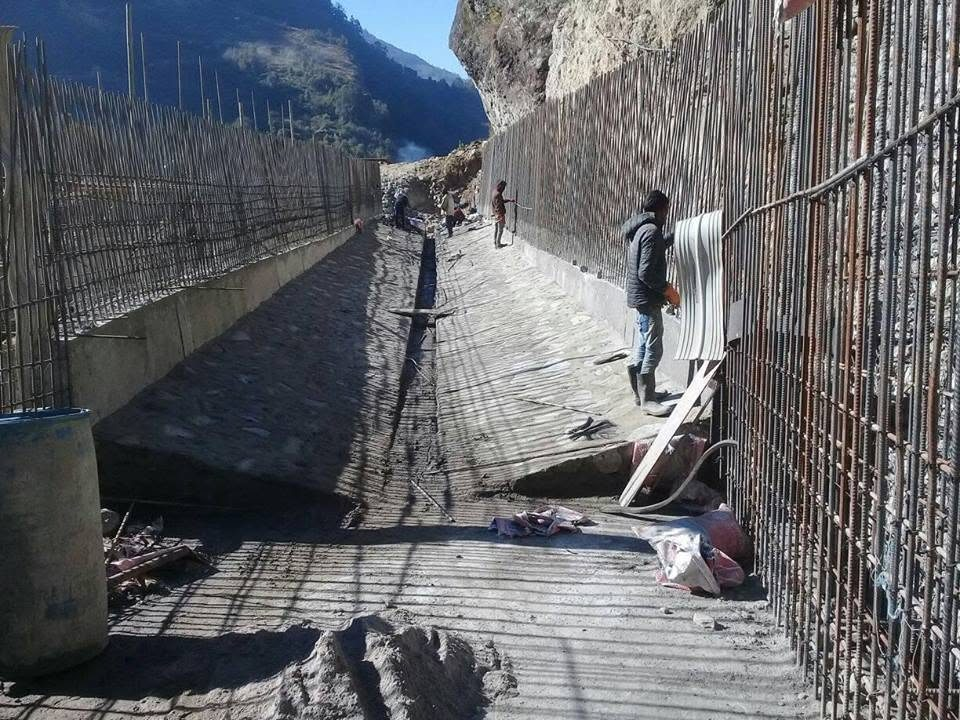
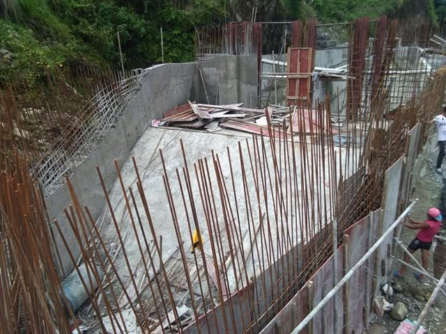
Dordi Hydropower Project
Field photographs showing large-diameter penstock installation, pipe bends, intake gate structures and trash rack works.

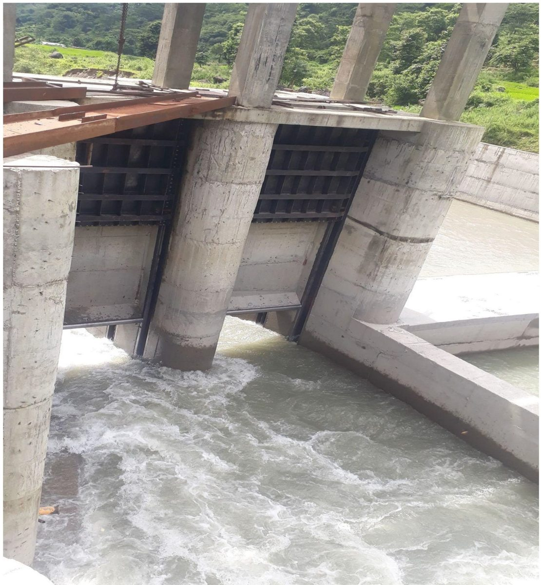
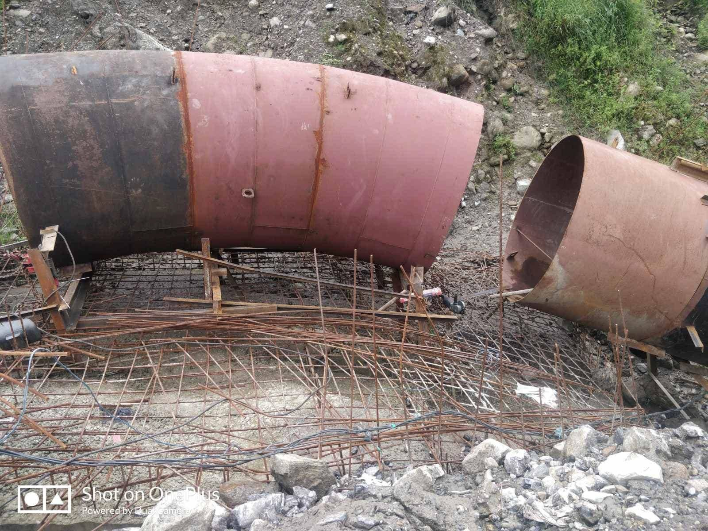
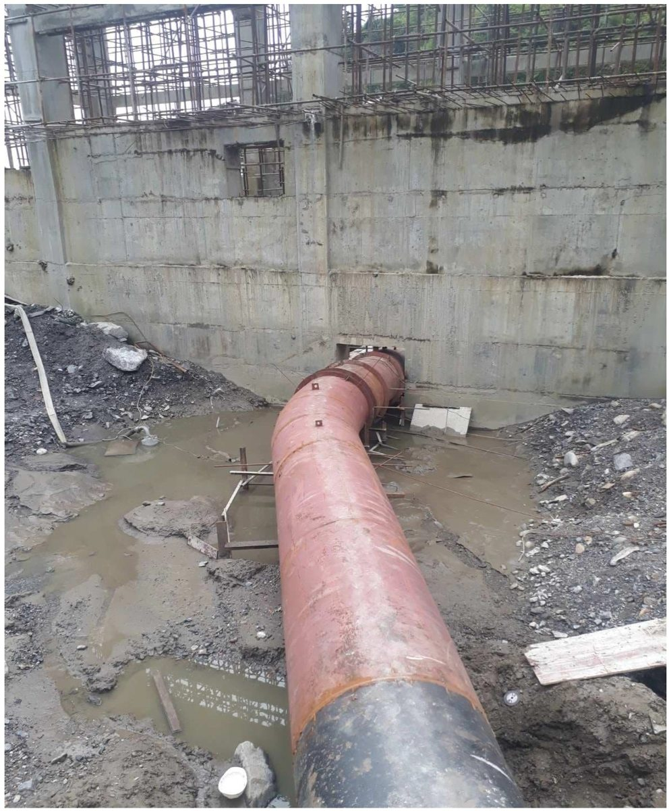
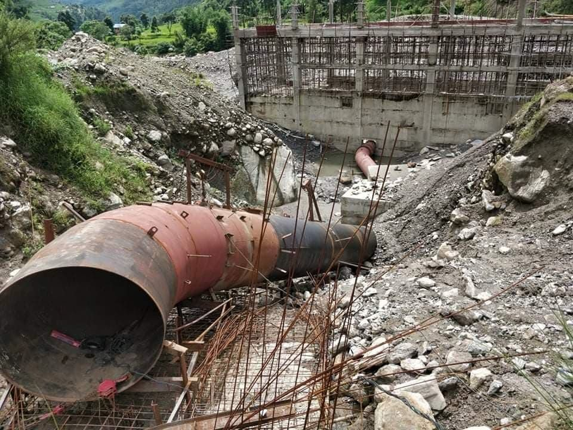
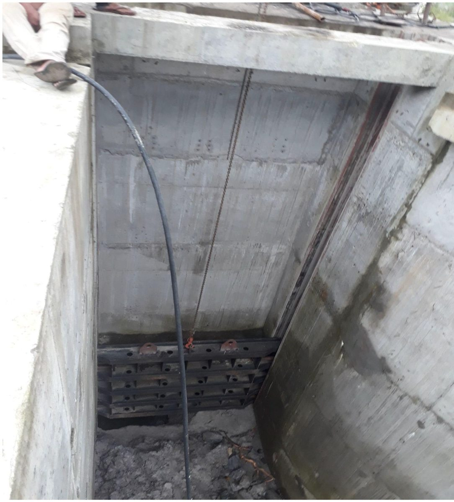
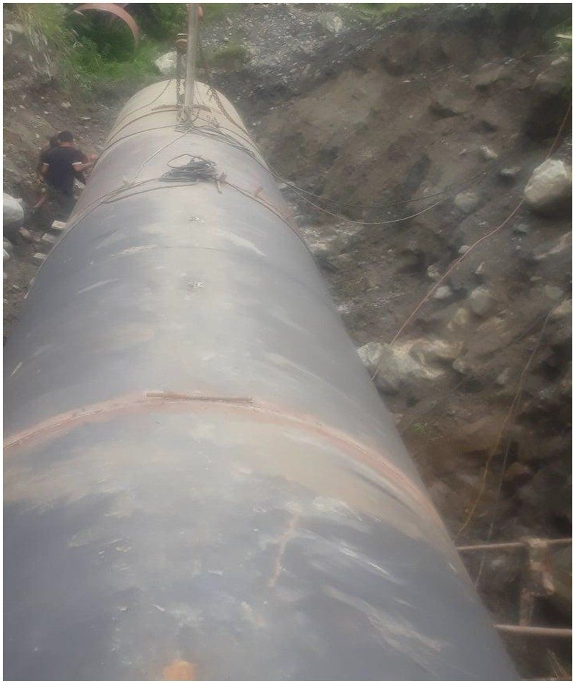
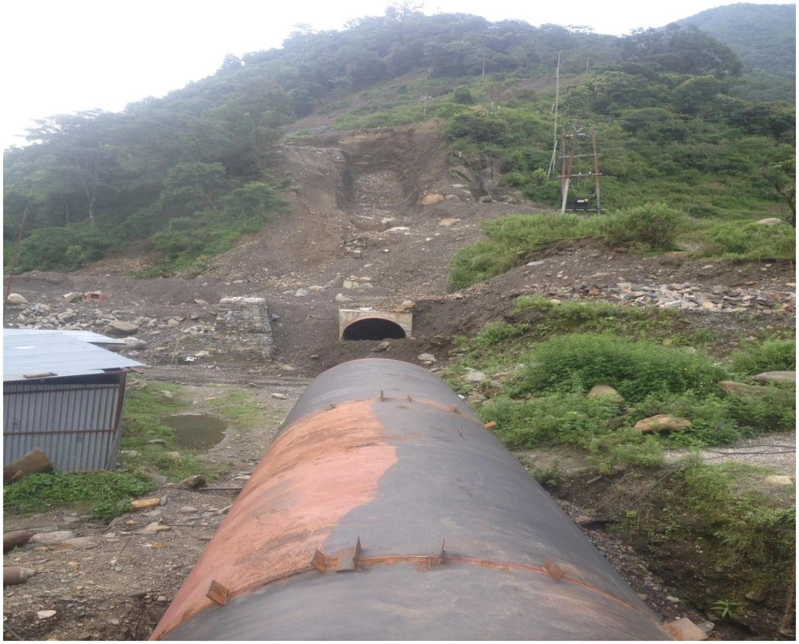
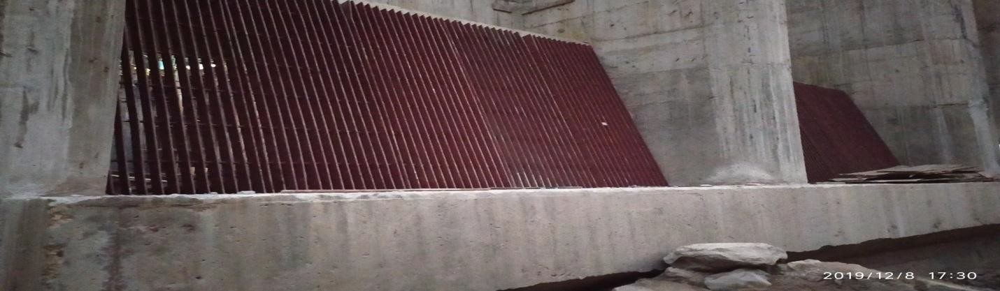

Photograph captions describe visible construction activities. Exact installation stages and personal responsibilities should be verified before making detailed claims.
Engineering Research
Field Evidence and a Life-Cycle Assessment Framework for HVOF WC-Co-Cr Coatings on Sediment-Eroded Hydropower Turbines: A Comparative Review
Submitted to the International Journal of Fluid Machinery and Systems (IJFMS). Under review; not a published article.
A comparative review of sediment erosion and cavitation at Kali Gandaki A and Middle Marsyangdi in Nepal and Cahua in Peru. The proposed life-cycle framework weighs coating investment against recovered energy, avoided maintenance, and recurring recoating and inspection costs.
Richet Khola Python Analysis
Illustrative monthly power and energy modelling, capacity-factor calculations, hydraulic sensitivity and penstock analysis.
Scenario-based calculations use illustrative discharge inputs, not validated site measurements.
Certifications
Autodesk Certified Professional
AutoCAD for Design and Drafting
White Card
Construction induction · Australia
Volunteer Work
Renewable Energy Engineering Exhibition
Mentored visitors in Kathmandu, explaining how mechanical and electromechanical components work.
Earthquake Relief Support
Supported community assistance, resource distribution, and rebuilding activities.
Let's Connect
Sydney, Australia · gautamashish799@gmail.com
Interested in hydropower, mechanical reliability, or engineering research? Get in touch.